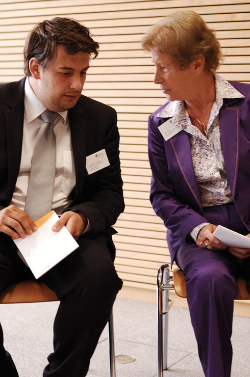
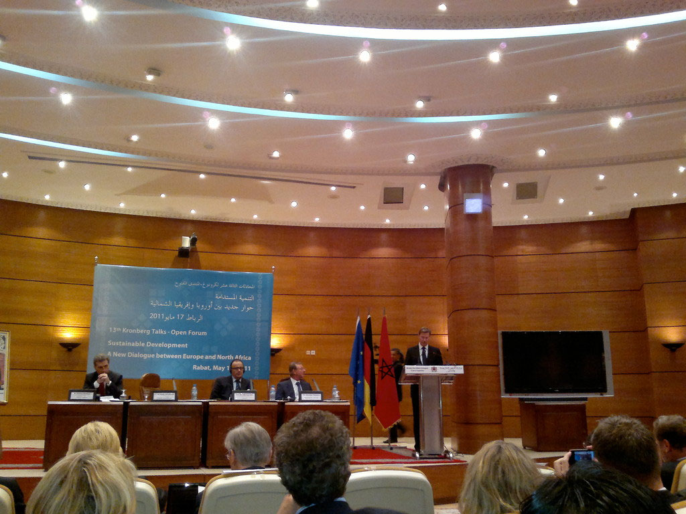

Beratung und Meinungsbildung: Dossiers, Länderstudien, wissenschaftliche Beratung und Fachkonferenzen.
Das dritte Segment umfasst den Bereich Beratung sowie Meinungsbildung. Zu den einzelnen Dienstleistungen zählen das Erstellen von Dossiers und Länderstudien, wissenschaftliche Beratung sowie die Organisation von Fachkonferenzen.
Zu unserem Angebotsspektrum gehört auch das Verfassen von Positionspapieren. Sebastian Schäffer und Michael Bauer sind Teil des Editorenteams einer Publikationsreihe (C·A·Perspectives), die sich mit aktuellen Entwicklungen und Herausforderungen internationaler Politik beschäftigen, die Europa und die Europäische Union betreffen. Darüber hinaus verfassen unsere Experten regelmäßig Aufsätze in akademischen Zeitschriften und Buchbeiträge in ihren jeweiligen Expertisebereichen. Die Mitglieder des Netzwerks von SSC Europe halten zudem Fachvorträge und stehen für Anfragen von Seiten der Medien zur Verfügung.
Unsere Experten agieren dabei unabhängig und überparteilich. In unserer Tätigkeit halten wir uns an die Regeln des guten wissenschaftlichen Arbeitens und respektieren den Kodex für wissenschaftliche Beratung. In Zeiten, in denen Entscheidungen im politischen Prozess oftmals als alternativlos und kompliziert deklariert werden, versuchen wir Alternativen aufzuzeigen und Entscheidungsprozesse verständlich zu vermitteln.
Beratung anfragen
